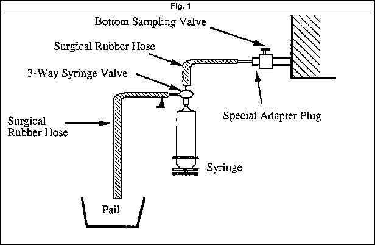

| Substations | Technical Procedures |
Equipment:
as Power Transformers
Procedure:
Insulating Oil Sampling (P1-Y1)
|
|
|||
|
Equipment: |
Document No: Oil-013-r2 | |||
| Issued to: Networks | ||||
| Status: |
||||
|
Procedure: |
Approved Date: 23 Dec 1996 | |||
| Date to be Reviewed: Mar 2012 | ||||
Introduction
tiated by the Canadian, Mr. Helmut and approved at 23 Dec 1996 and revised at 4 Feb 2002.It is recommended to take oil samples for laboratory analysis every one year, frequency may be adjusted by order of Central Chemical Lab. and the approval committee.
The purpose of this procedure is to provide sampling procedure for two types of diagnostic tests carried out on transformer insulating oil:
(a) Basic Oil Tests.
(b) Gas-In-Oil Analysis
The first draft ini
This document was updated at 19 Mar 2007 as follows:
- The document Number changed from TD-SS-003-r1 to be T-001-r2
- The procedures indicated at doc. No. T-001-r1 was added to this document
Insulating oil used in EEHC power transformers is obtained by fractional distillation of mineral oil which consists of over two thousand hydrocarbon compounds. However only nine of these compounds in the gaseous form are considered important in the analysis of dissolved gas in insulating oil. These are acetylene, carbon dioxide, carbon monoxide, ethane, ethylene, hydrogen, methane, nitrogen and oxygen.
Furthermore, six of these gases are combustible, the presence of which is an indication that either overheating, loose connection, break in cellulose integrity, arcing, partial discharge or corona has taken place in the transformer. When dissolved in oil these gases reduce the flash point of the oil and cause premature failure. Analysis of dissolved gas-in oil is the most powerful non-invasive diagnostic method available for transformer oil testing.
Basic-Oil tests determine dielectric strength, neutralization number, interfacial tension (Soluble contaminants) and moisture content of oil. Basic Oil tests also provide important information about the dielectric strength of the oil.
Regular testing of oil and rigorous monitoring of test results is a proven and cost effective method for early detection of insulation system problems in transformers. The two methods used by EEC are Basic Oil Tests and Dissolved Gas-In-Oil Analysis.
Safety Precaution
A work permit must be issued
The qualified maintenance staff should carry the suitable ID safety category,
Safety fence with caution marks surrounding the work area is required,
Wear your safety and healthy equipment as safety helmet & safety shoes ...etc.
There is a danger of falling into the oil containment pit when working near large power transformers.
Chemical Precautions
Samples must be taken on clear days, precautions being taken to guard against contamination by wind blown dust and sand particles.
It is recommended to take oil samples at normal transformer operating temperature.
Read and record the oil temperature before taking a sample.
It is recommended to take only thoroughly cleaned small neck, brown glass bottles for sampling, capacity. should be 1000 cc (1 liter). The Central Chemical Lab requests two 1-liter bottles of oil sample.
It is recommended to take oil samples only under dry and clear environmental conditions.
Tools and Equipment
Complete tool set
Safety and healthy equipment as Safety helmet, safety belt, ... etc
Two cleaned small neck, brown glass bottles for sampling, capacity. should be 1000 cc (1 liter).
Cleaning cloth, and Labels.
Sampling bottles, syringe, adaptor plug, surgical rubber hose, three way valve and labels.
Work to be Carried out
Flush Sampling Valve
Clean area around bottom sampling valve
Open bottom sampling valve on the transformer and drain about one liter of oil into a pail to flush inside of valve
Rinse the inside of a clean and dry sampling bottle with oil taken directly into the y bottle from the transformer
Fill the bottle with oil through the sampling valve very slowly to avoid air bubbles entering the oil sample
If the transformer has a top oil sampling valve, repeat step 1 to 4.
Label the bottles correctly, include station name transformer make, year of manufacture and transformer rating, date of sample taking, indicate whether it is bottom or top oil.
Sampling for Basic Oil Tests
Carefully clean the oil sampling valve from dust and dirt. (Impurities which tend to affect the dielectric strength of oil will generally be found at the bottom of the transformer tank, therefore the small sampling valve in located on, or near the main drain valve).
Drain a small amount of insulating oil into a pail to flush out sampling valve and line.
Fill the sample bottle about half full with
oil, shake the bottle well and empty the oil.
into the pail.
Now fill the sample bottle very slowly with oil to avoid air bubbles.
Seal the bottle tight and prepare for shipment to the lab.
The sample must be kept away from exposure to direct sunlight.
Make sure the sample bottle is correctly labled.
Make sure you fill in the attached sample data sheet.
Send the oil sample to the laboratory as soon as possible.
Fit clean hose arrangement made of surgical rubber hose and a 3-way laboratory type valve to the transformer sampling valve as seen in the figure 1 below.

Turn syringe valve to flush position, open the transformer sampling valve and allow the oil to run until all trapped air in the hose is eliminated. (Fig. 2)
Turn the syringe valve to fill position and allow approximately ten (10) cc of oil to enter the syringe. Close the transformer valve and remove the syringe (Fig.3)
Hold the syringe vertically with the mouth upwards and expel any air bubbles. Depress the piston to the zero mark and shut off the syringe valve. (Fig. 4)
Shipping
Pack samples into Syringe boxes provided. Fill all empty space with dust free packing material. As soon as possible, transport samples to the Authority's chemical laboratory.
Location: Equipment
code
Checked By: Date:
Signature: